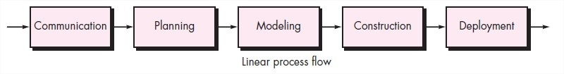
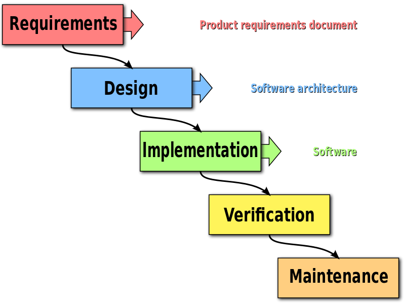

Sofware Development Models
Summary
This document includes a short essay about Software Development Models.
What they are and some examples.
Keywords: Software, Models, Essay.
Introduction
In this post I'm going to talk about Software Development Models,
since I've been working on some coding projects I can certainly say
that following one is a most.
Not so long ago I worked on developing an automated plantpot and,
it was a nightmare to do colaborative coding with my partner, I was a rookie
back then.
I came to the realization that without tools like git doing colaborative coding
would be practically impossible since no one in the team would know which line
was altered nor which is the newest version of the code. In any case we have been
coding for almost 60 years and as time went on we developed tools and models to
ease these issues.
Even before choosing a model!
It is important to know some tips about coding before choosing your model
since in many cases even if you follow a model step by step, rule by rule
you might become a hassle.
Here are some tips you can follow:
The reason it all exist
Everything you code must have a purpose e.g Var Tacos = Delicious,
If you dont plan on using tacos on your program, then why have them in the
first place?.
Keep It Simple, Stupid!
Keep in mind what you are coding, nothing should be sensless e.g Var Tacos =
Quesadillas, Tacos are tacos it is ilogical to asign them the value of quesadillas.
Maintain the vision
If you are coding a software for a food restaurant, don't add car features.
What you produce, others will consume
Ohter people might need to use your code, so make it understandable for as many as
you can.
Be open to the future
Life evolves an so code evolves, new OS, technologies, etc. Your code might need to change later!.
Plan ahead for reuse
Code having in mind that you can reuse many functions and variables.
Think!
You should think about the problem, don't try solving it without a thought.
Models they flow!
Linear Process Flow

Like the name implies all the process is fixed, since the very
beginning.
Iterative Process Flow
In contrast to the linear process, you can go back to the beginning in many stages.
Evolutionary Process Flow
The evolutionary process works by adding into each iteration.
Parallel Process Flow
In the parallel process many things happen at once.
The models themselves
The waterfall model

This was the first model to be published in 1970, it follows a linear process flow.
Before ending one waterfall all the members must have ended their work, it's measured in
n waterfalls.
Incremental model
Based on both linear and parallel flow, in this model each increment it's a functional product since the beginning, it's agile and
models like scrum are based on this model. This model reinforces communication with the client
because in each increment a feedback is evaluated. Many websites are based on this model.
Spiral model
This model functions with a set amount of spirals (incremental/iterative) each spiral starts
the process from the beginning, it's not time efficient but has a much
refined final product because it takes explicit recognition of risk with in the process.
Prototype model
It's an evolutionary model, it is used to hasten the developing process of a product
by making prototypes to prove concepts, this model is widely used in engineering
because of it's trial and error nature. The model is not cost efficient and many
problems can be carried over from previous evolutions.
Conclusion
Knowing how software models are implmented is a must nowadays, in order to follow industry standards,
from personal experience working with embedded systems and web development it is nearly impossible
to work in teams without these tools.
When working on embedded systems most likely you end up using the prototype model, and the code
will get messy after a some iterations of the product. When I was working on an automated plantpot
I ran into many problems showing the code to my partner, that caused our work to be splitted and
developed individually resulting in a product full of errors and bad decisions.
Software development models exist so these errors don't occur as often, choosing the right model to
follow can be the difference between a succesful product or a complete failure.
References
http://softwareengineeringmca.blogspot.com/2016/10/a-generic-process-model-iterative-process-flow-linear-process-evolutionary-process-parallel-process.html
http://www.cs.ccsu.edu/~stan/classes/CS410/Notes16/02-SoftwareProcesses.html
Date: 09/13/2018